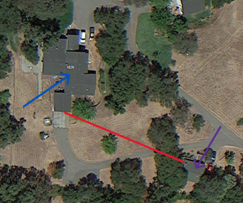
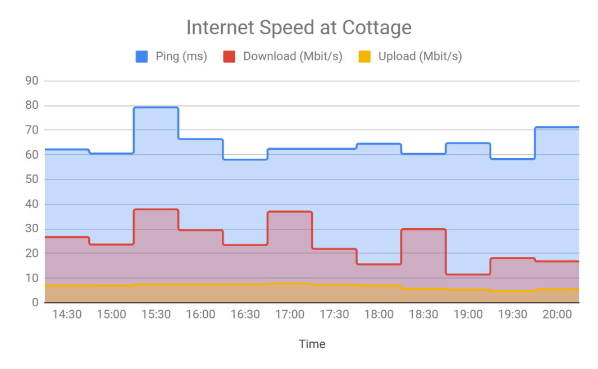
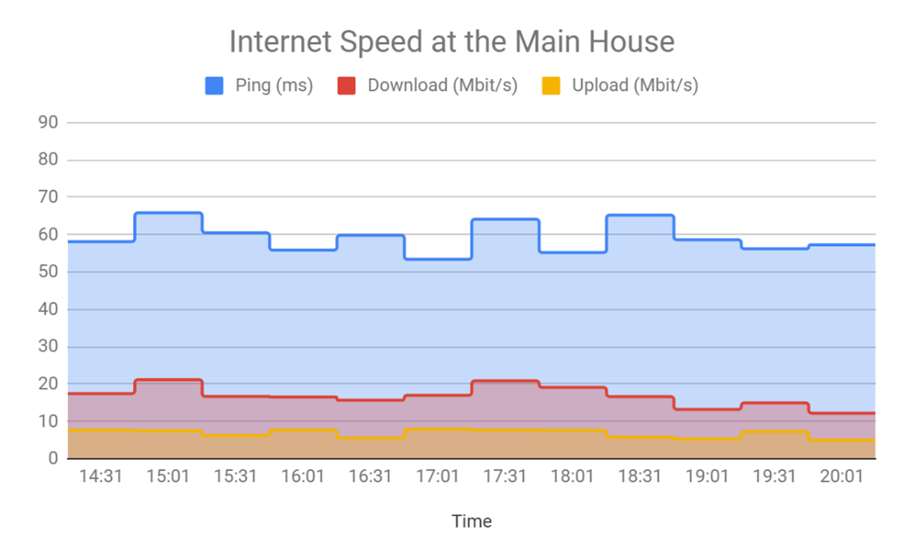

A point-to-point wireless bridge provides satellite internet from a cottage to a main house. There were concerns the bridge reduced internet speed.
Solution
Automated paired speed tests: cottage runs first, then triggers a test at the main house. Results upload to a Google Drive spreadsheet for comparison and analysis.

Blue arrow shows main house, and the purple shows the cottage. The red line shows the point-to-point path and is approximately 250 feet.

Graph showing the internet speed tests over time of the cottage.

Graph showing the internet speed tests over time for the main house.